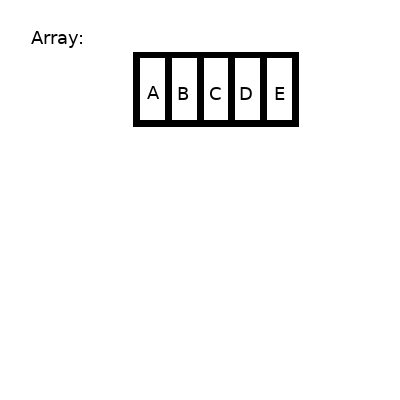

First and rest (Recursion)
Table of Contents
1 Intro
Sometimes what makes difficult to solve a recursion exercise (especially when learning the basics) is that we don't know how to start. I think that the use of first (element of the arrray) and rest (of the array) make that step easier.
2 first and rest in JS
We are going to use the destructuring assignment syntax:
- first:
let arr = ["A", "B", "C", "D", "E"]; const [ first ] = arr; console.log('first: ', first);
first: A
- rest:
let arr = ["A", "B", "C", "D", "E"]; const [ _, ...rest ] = arr; console.log('rest:', rest);
rest: [ 'B', 'C', 'D', 'E' ]
- first and rest
let arr = ["A", "B", "C", "D", "E"]; const [ first, ...rest] = arr; console.log('first: ', first); console.log('rest: ', rest);
first: A rest: [ 'B', 'C', 'D', 'E' ]
We can print every element of the array using first and rest (we have also got undefined and a empty array):
let arr = ["A", "B", "C", "D", "E"]; const len = arr.length; for (let i=0 ; i < len + 1 ; i++ ) { const [ first, ...rest] = arr; arr = rest; console.log(i, 'first: ', first); console.log(i, 'rest: ', rest); }
0 'first: ' 'A' 0 'rest: ' [ 'B', 'C', 'D', 'E' ] 1 'first: ' 'B' 1 'rest: ' [ 'C', 'D', 'E' ] 2 'first: ' 'C' 2 'rest: ' [ 'D', 'E' ] 3 'first: ' 'D' 3 'rest: ' [ 'E' ] 4 'first: ' 'E' 4 'rest: ' [] 5 'first: ' undefined 5 'rest: ' []
What happens is something like this:

2.1 Using first and rest
As we have seen, when using "first and rest" we need to have to be careful: because we can get undefined or an empty array (like in the example above).
With that in mind, let's look to some examples:
2.1.1 len
/** * Returns the number of elements in an array. * If the array is empty, return 0. * @param {arr} arr - the array * @returns {number} - the number of elements in the array or zero */ function len(arr){ // without this (if) we get: Maximum call stack size exceeded if(arr.length === 0) return 0; const [first, ...rest] = arr; return 1 + len(rest); } console.log(len([])) console.log(len([0])) console.log(len([1,2]))
0 1 2
if we look at it differently, we can see a base case and a recursive case:
... // base case if(arr.length === 0) return 0; // recursive case const [first, ...rest] = arr; return 1 + len(rest); ...
2.1.2 sum
/** * Returns the sum of every number in the array * If the array is empty, return 0; * @param {array} arr - the array of numbers * @returns {number} - the sum of every number in the array or zero */ function sum(arr) { // without this (if) we get: Maximum call stack size exceeded if(arr.length === 0) return 0; const [first, ...rest] = arr; return first + sum(rest); } console.log(sum([])) console.log(sum([0])) console.log(sum([1])) console.log(sum([1,2,3])) console.log(sum([3,4,6]))
0 0 1 6 13
if we look at it differently, we can see a base case and a recursive case:
... // base case if(arr.length === 0) return 0; // recursive case const [first, ...rest] = arr; return first + sum(rest); ..
2.1.3 countChar
/** * Returns the number of ocurrences of a character in a string. * If the character does not occur in the string return 0. * @param {string} c - the character to count * @param {string|array} str - string in the first call, array in the recursive calls * @returns {number} the number of ocurrences of the character in the string or zero */ function countChar(c, str) { // without this (if) we get: Maximum call stack size exceeded if(str.length === 0 ) return 0 const [first, ...rest] = str; if(c === first ) { return 1 + countChar(c, rest); } else { return countChar(c, rest); } } console.log(countChar('h', 'ayzayzzz')) console.log(countChar('a', 'ayzayzzz')) console.log(countChar('y', 'ayzayzzz')) console.log(countChar('z', 'ayzayzzz'))
0 2 2 4
if we look at it differently, we can see a base case and two recursive cases:
... //base case if(str.length === 0 ) return 0 // recursive case const [first, ...rest] = str; if(c === first ) { return 1 + countChar(c, rest); // recursive case } else { return countChar(c, rest); } ...
2.1.4 remove first ocurrence
/** * Removes the first occurrence of an number m from an array of numbers. * If m does not occur in the array, the array remains unchanged. * @param {number} m - the number to remove * @param {array} arr - the array of numbers * @returns {array} - the array without the first ocurrence of m or the original array */ function removeFirstOcurrence(m, arr) { // without this (if) we get: Maximum call stack size exceeded if(arr.length === 0 ) return [] const [first, ...rest] = arr; if(m === first) { return rest; } else { let a = removeFirstOcurrence(m, rest); a.unshift(first); return a; } } console.log(removeFirstOcurrence(5, [])) console.log(removeFirstOcurrence(5, [5])) console.log(removeFirstOcurrence(5, [1])) console.log(removeFirstOcurrence(5, [5,5])) console.log(removeFirstOcurrence(5, [1,5,5,2,3])) console.log(removeFirstOcurrence(5, [5,1,2,3])) console.log(removeFirstOcurrence(5, [1,2,5,3])) console.log(removeFirstOcurrence(5, [1,2,3,5]))
[] [] [ 1 ] [ 5 ] [ 1, 5, 2, 3 ] [ 1, 2, 3 ] [ 1, 2, 3 ] [ 1, 2, 3 ]
if we look at it differently, we can see two base cases and a recursive case:
... // base case if(arr.length === 0 ) return [] // base case const [first, ...rest] = arr; if(m === first) { return rest; // recursive case } else { let a = removeFirstOcurrence(m, rest); a.unshift(first); return a; } ...